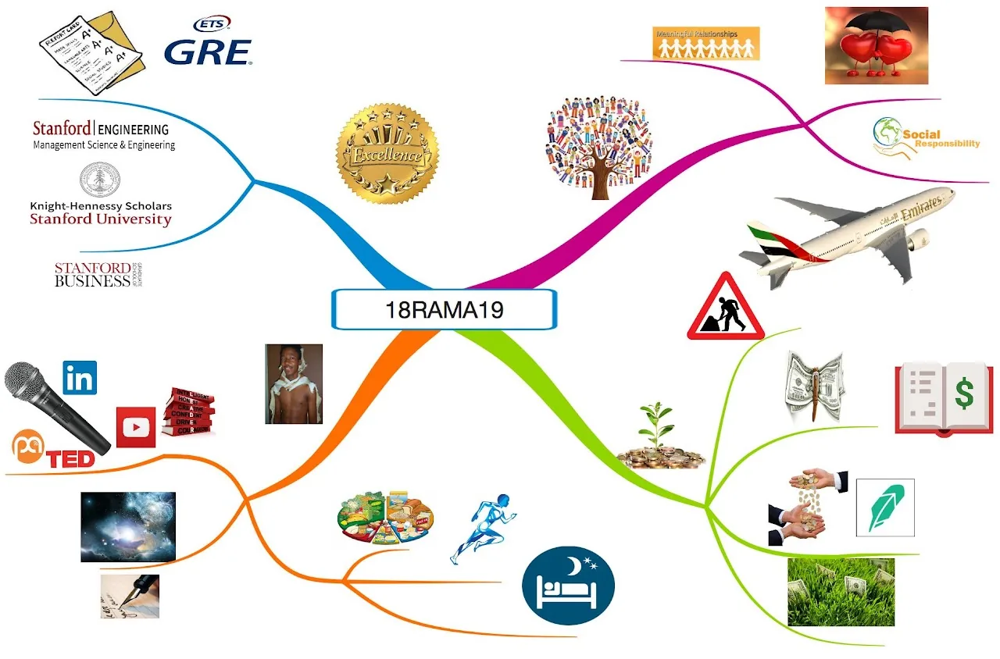

Live → Blog
September 21, 2018

The new Academic Year is almost upon us here at Stanford. This will be my final year at Stanford, but also the last year of my current "Strategic Plan". The Strategic Plans are basically 5 year plans. Generally speaking these plans inform my medium term and short-term goal settings by providing some framework that is consistent with my values on which to base my actions. The current Strategic Plan rests on 4 Pillars: Personal Development, Academic Excellence, Financial Sustainability, and Meaningful Communities.
Personal Development
One of my priorities for this coming academic year is sleep. To be able to give the world my best, I have to take care of my body. In addition to eating well and ensuring my life is moderately active, I will be ensuring I sleep on average for 7.5 hours every night. This is about an hour and half more than my average last year, which will require removing some inefficiencies in my daytime schedule. I hope to continue creating time to nurture my curiosity through reading books, watching documentaries, and listening to podcasts. As I move into my 11th journal since starting at Stanford, there is no doubt reflection and creativity will be a significant part of this coming year, especially as I draft the next Strategic Plan.
Academic Excellence
As I consider graduate school as an option, one of the critical components of Academic Excellence will be studying for and acing the GRE Exam. (I still hate standardized tests the same way I did when I took the SAT, but I do not make the rules). As I now have an accountability partner, my goal is to enforce a 24 hour homework policy: I will plan to read every homework assignment within 24 hours of its release, and plan to have it completed at least 24 hours before it is due. More specifically, my goal is to have 0 all-nighters this year, while maintaining my record from last year of no grade less than A-. I will make it my goal to use the resources that are at my disposal to aid my academic goals, such as office hours and review sessions before exams.
Financial Sustainability
I recently completed a self-audit of my expenditures, investments, and income streams, and there is a lot of room for growth. My main goal in this area for this upcoming year is to cut back on my spending, especially on things that I know do not bring me value. I especially plan to say NO more often, as a significant portion of my spending has been on projects that I did not believe in, but for some reason did not want to let people down.
Meaningful Communities
Towards the end of last year, certain circumstances led me to be intentional about the people I let into my life, and the communities to which I am an active member. At the core of this decision, is the realization that the wrong people can bring toxicity into my life, not that they are necessarily bad people, but that they have no part to play in my life. In a similar value, I seek to only be a part of those relationships and communities where I will be able to give my best self and contribute meaningfully to their growth. Also this year I am on a journey of love. That is exciting.
← Return to Blog